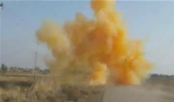

| Número | Nome | Valor | Ilustração | Vídeo |
|---|---|---|---|---|
| 0001 | Míssil Tomahawk
Esses mísseis surgiram durante a Guerra do Golfo (1991) e contêm 450 quilos de explosivos. Eles voam a quase 900 quilômetros por hora e têm um alcance em torno de 2.000 quilômetros, com a capacidade de mudar de altura durante a trajetória. São disparados na vertical, a partir de navios militares. |
US$ 1.000.000 | ||
| 0002 | Pardus sbs Camuflada
Este modelo é um sistema e design AR diferente. O pistão de gás está no cano e a mola de ação também funciona no cano. O Pardus SBS pode estar na opção de estoque fixo, que é uma peça completa com o receptor inferior, ou em outras opções de estoque, como telescópico, dobrável lateral. O acabamento básico da espingarda é em preto e também pode ser acabado em cores cerakote ou padrões camuflados. Magazines de 2, 5 e 10 Rds estão disponíveis ou capacidades especiais podem ser organizadas sob demanda. Sendo principalmente em 12ga, o SBS pode estar também em calibres de 20 e 36. |
R$ 16.600,00 | ||
| 0003 | Lança-Chamas
Um lança-chamas é um aparelho mecânico desenhado para projetar uma chama longa e controlável, ou, literalmente, lançar chamas. Alguns gêneros, incluindo os lança-chamas militares mais comuns, projetam um líquido inflamável, enquanto outros, projetam um gás inflamável. É utilizado pelas forças militares e por civis que precisem de uma chama controlada, tais como, na agricultura ou no combate a incêndios. Muitos lança-chamas, não militares, não utilizam um líquido inflamável, mas em vez disso, um gás inflamável de alta pressão, tais como, gás propano ou gás natural; que são considerados mais seguros para utilização agrícola, industrial. |
R$ 7.164,60 | ||
| 0004 | Metralhadora
Metralhadora é uma arma de fogo automática projetada para disparar tiros sucessivos rapidamente a partir de um cinto de munição, que são vários cartuchos presos entre si, ou de um carregador. Geralmente, a taxa de tiros por minuto de uma metralhadora comum é de várias centenas. Seu funcionamento é, em alguns pontos, similar ao de um revólver. É considerada uma das mais importantes tecnologias do século XX, tendo sido fundamental durante a primeira e segunda Guerra Mundial. |
R$ 300.000,00 | ||
| 0005 | Gás Mostarda
Gás Mostarda, EA-1033, Levinstein, iperita, Kampfstoff, Mostarda de enxofre, pelos códigos HD, código dado a mistura com pureza de 90% para 99%, código que significa destilado de gás mostarda. Gás mostarda (Levinstein), ou H, código dado a uma forma mais impura do gás mostarda, simplesmente dado ao agente não destilado (pós síntese), tendo uma pureza abaixo dos 90%, aproximadamente 70% de pureza, com 30% em impurezas e produtos de sub reações. |
R$ 1.000,00 |  | |
| 0006 | Tanque de Guerra
Os tanques Mark I a Mark V, fazem parte de uma família de veículos que, a partir do final da Primeira Guerra Mundial viria a revolucionar a guerra, e em determinadas condições ter influência decisiva nas batalhas terrestres. A utilização dos Mark I, ainda bastante rudimentares, representou uma reviravolta nas técnicas de guerra. Passou-se da estagnação das trincheiras das quais era demasiado perigoso sair para os ataques permanentes, com os militares protegidos no interior dos tanques. |
R$ 2.300.000,00 | ||
| 0007 | Caça (Avião de Guerra)
Caça é um tipo de avião militar concebido para combate aéreo (com outros aviões), em oposição ao bombardeiro, desenhado para atacar alvos terrestres através de bombas. |
R$ 854,700.000,00 | ||
| 0008 | Submarino
Submarino é uma embarcação especializada para operar submersa, tendo sido largamente usada pela primeira vez na Primeira Guerra Mundial, sendo empregada por todas as grandes marinhas atualmente. Submarinos civis e submergíveis são usados com fins científicos tanto na água doce quanto salgada para trabalhar em profundidades muito grandes para mergulhadores humanos. |
R$ 4.776.000.002,39 | ||
| 0009 | Couraçado
Um couraçado ou encouraçado é um navio de guerra pesadamente blindado e armado com as peças de artilharia de longo alcance e de maior calibre existentes. Normalmente, os couraçados eram maiores, mais armados e mais blindados que os cruzadores e contratorpedeiros. O projeto dos couraçados evoluiu, continuamente, de modo a incorporar e adaptar os mais recentes avanços tecnológicos. |
R$ 9.100.000.000,00 | ![https://www.google.com/imgres?imgurl=https%3A%2F%2Fupload.wikimedia.org%2Fwikipedia%2Fcommons%2Fthumb%2Fb%2Fb4%2FFrench_battleship_Richelieu_underway_in_the_Atlantic_Ocean_on_26_August_1943_%252880-G-78789%2529_%2528cropped%2529.jpg%2F340px-French_battleship_Richelieu_underway_in_the_Atlantic_Ocean_on_26_August_1943_%252880-G-78789%2529_%2528cropped%2529.jpg&imgrefurl=https%3A%2F%2Fpt.wikipedia.org%2Fwiki%2FRichelieu_(coura%25C3%25A7ado)&tbnid=WXqVfV6vHVGO-M&vet=12ahUKEwj19KnX2pf4AhVARLgEHUK9DOgQMygLegUIARDzAQ..i&docid=sSH2bxLT-wCvnM&w=340&h=213&q=coura%C3%A7ado&client=opera-gx&ved=2ahUKEwj19KnX2pf4AhVARLgEHUK9DOgQMygLegUIARDzAQ](images/MOAI.jpg) |
|
| 0010 | Lança-Granadas
Um lança-granada é um dispositivo ou arma que lança granadas com maior acurácia, alta velocidade e distâncias maiores que um soldado poderia jogar com a mão. |
R$ 890.000,00 |